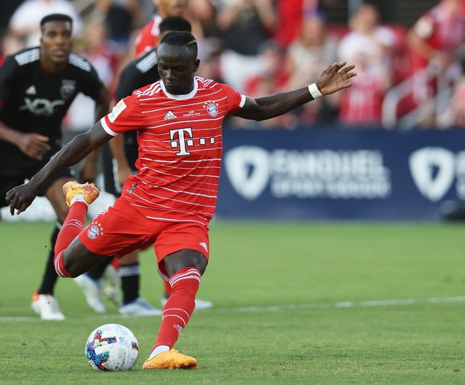
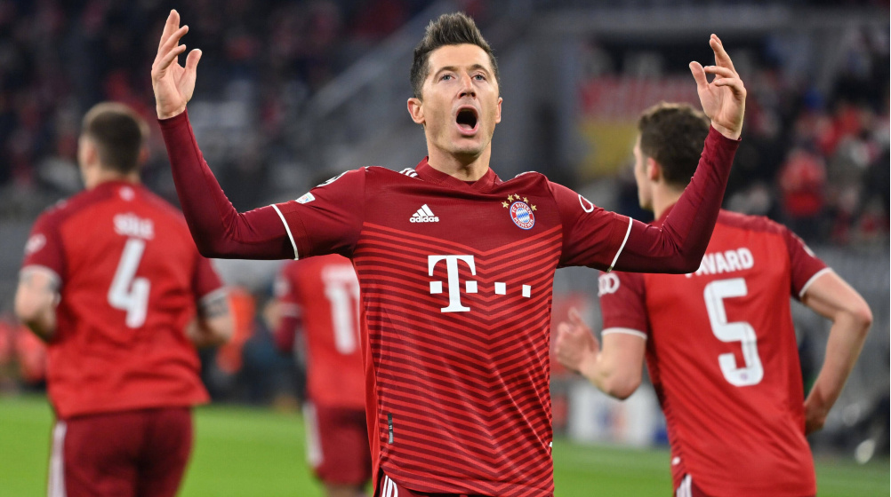

Sadio Mané.
Sadio is a Senegalese footballer who plays as a forward for Bundesliga club
Bayern Munich and the Senegal national team. Sadio is known for his pressing, dribbling, and speed.

Luka Modrić.
Modrić is a Croatian professional footballer who plays as a
midfielder for La Liga club Real Madrid and captains the Croatia national team. He plays as a central midfielder.

Robert Lewandowski.
Robert is a Polish professional footballer who plays as a striker for La Liga club Barcelona
and captains the Poland national team. He is famous for his nickname that Thomas Muller said. He said "Robert Lewangoalski".
